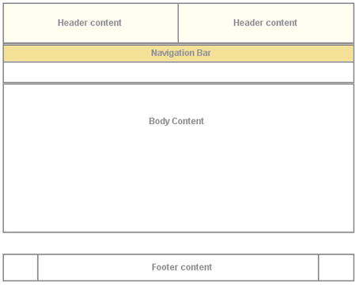
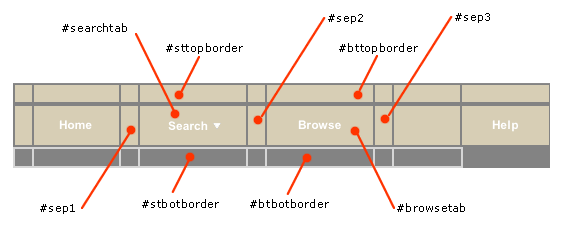

The user interface in the DLXS middleware is manifested by a combination of interrelated techniques:
The first two techniques are of primary importance for specifying the various components of HTML delivery that make up the "look and feel" of the interface.
HTML templates are used to deliver dynamic content from the CGI within a prescribed HTML structure. In general, there are as many templates per class as there are distinct page types in the overall functional architecture of the class. A collection implemented with the TextClass middleware, for example, can include up to 33 template files for delivering, among other pages, multiple search forms, results displays, bibliographic headers and tables of contents, search histories and full text displays. Each HTML template is a combination of static HTML code for areas of content that are unchanging from page to page, and processing instructions that are either replaced by content provided by the CGI or used to remove content or code from the template before delivery. Processing instructions can deliver simple strings, or large combinations of text and HTML code, depending on the circumstance, but the practice has been to minimize the amount of HTML code replaced via a PI because this allows for easier maintenance of graphical interface at the template level. Otherwise, the only rule governing template planning is that, when parsed, it should deliver valid or acceptable HTML to the browser.
HTML templates are combined with processing instruction tags that are parsed and replaced by the middleware. Processing instruction tags are of the form
<?PI_IDENTIFIER_NAME [modifiername="value"]*>
where all identifier names are preceded by a question mark and are represented in all capital letters with underscore characters. Zero or more modifier name/value pairs can be included to provide additional parameters. Here are two example PI tags:
<?TITLE>Appears witin <TITLE></TITLE>tags and supplies a collection title string.<?DOC_ROOT mode="single">Can appear within the hreforsrcattribute values in individual collection templates to return the appropriate local root path of that collection.
Processing instruction tags are not, in all cases, a standardized API mechanism to collection information, though they share some of those characteristics. In general, the PIs are more likened to a customized API to the middleware itself. In this regard, PIs perform two general types of functionality:
PIs may act as simple variable names: As in <?TITLE>
above, replaced by simple strings or even large blocks of HTML code and text;
PIs may act as include/exclude instructions: A pair of PI tags may instruct the middleware to include or exclude code contained in the template, depending on specific context.
<?INCLUDE_COLL_SPECIFIC_CONTENT id="navbarbrowselink">
<td id="browsetab" width="90" height="23" align="center" nowrap>
<span class="navlinks">
<a id="browselink" href="<?COLL_SPECIFIC_CONTENT id="navbarbrowselink" cginame="text-idx">" class="nav" onMouseOver="P7_autoLayers(0)">Browse</a>
</span>
</td>
<td id="sep3" width="1">
<img src="/t/text/graphics/plug.gif" width="1" height="1" border="0" alt="design graphic">
</td>
<?INCLUDE_COLL_SPECIFIC_CONTENT id="navbarbrowselink">
The code example above is from the table that contains cells navigation bar
tabs and tab divisions. The HTML wrapped within the <?INCLUDE_COLL_SPECIFIC_CONTENT>
PI tags is for a browse feature that is not supported by all collections. The
PIs are used to remove the code in the case of collections that do not need
this HTML, and to provide the appropriate url for the browse feature for collections
that do have browse features.
Each of the class-specific sections below describes the techniques that are applied within the class architecture to effect changes to overall class look and feel as it is expressed through the templates. It is important to note, however, that the class middleware supports the implementation of customized, collection-specific templates and associated stylesheets. That is, when attempting to render a particular page utilizing a specific template, the middleware will first look for the required template in the collection-specific path, using a customized template if it exists. If there is no such customized version of the required template in the collection path, the middleware will utilize the default class template. The sections below, thus, apply to the techniques that can be applied to any templates, class defaults as well as optional individual versions.
Default page delivery in Text Class is done via class-level templates that
are shared by all instances of the class, though the middleware also supports
collection-specific templates for any or all page-based behavior within the
class. All default Text Class page templates are based on the same layout approach,
which relies on tables (along with transparent spacer gifs) for all positioning
and general color or graphic appearance. General layout is shown in Figure
1, which shows top-level tables with borders showing, and using the color
scheme for the Voltaire électronique collection. All table cells for
header and navigation bar content at this level have default values for the
bgcolor attribute for browsers that are not CSS-capable. Each header
and navigation cell also has a default CSS class value and default background
image specified in the background attribute. The background colors
created by class and gif allow for flexibility to change appearances for different
collections based on the same template. For more on specifiying individual collection
appearance, see Specifying individual collection characteristics.
|  |
| Figure 1: top-level table structure of a typical page. |
Figure 2 shows the simple search page for The American Verse collection as it appears normally. Navigation bar labels, page text header markup (not header text content, e.g., "Basic Search"), instruction text and footer text are hard coded, and thus identical across all collections. All other content is specified per collection by processing instructions.
|
| Figure 2: Basic search page for American Verse. |
Text class templates utilize two CSS files for controlling most font and color
characteristics: textclass.css and textclass-specific.css. textclass.css is
stored in at the <root>/t/text/ path and contains all the
default style declarations. textclass-specific.css is created for each individual
collection and stored at the <root>/c/coll/ path. References
to both stylesheets are as follows:
<link rel="stylesheet" href="<?DOC_ROOT>textclass.css" type="text/css">
<link rel="stylesheet" href="<?DOC_ROOT mode="single">textclass-specific.css" type="text/css">
The <?DOC_ROOT> processing instruction resolves to the relevant path for each stylesheet. Because textclass-specific.css is referenced after textclass.css, any style declarations that appear in textclass-specific.css will effectively overwrite matching declarations in textclass.css. This is how fonts and background colors are varied for each collection. (full text of textclass.css)
See a comparison of textclass.css and a collection specific CSS file.
Default text class templates employ a variety of relatively generic graphics
that can be referenced by all collection instances. A table
of shared files shows those files that are stored in the <root>/t/text/graphics/
directory. Any alternative graphics by identical names may be stored in individual
collection graphics directories to replace the default class graphics
for that particular collection. Any files not stored in collection graphics
directories, but referenced in the templates, will be referenced from the class
graphics directory as a fallback mechanism. Graphics files that are likely to
be unique to each collections are discussed in the section on header
background colors and graphics.
The header of each page template includes that area in the top 75 pixels of the page containing those elements associated with unique collection identity: main collection title, global links, if any, and the main navigation bar. The templates accomodate inclusion of background colors or graphics to provide some flexibility in creating unique appearances for different collections.
Background color and graphics
Main background color for template headers is provided at three different
levels: default background colors for table cells specified in the bgcolor
attribute, style declarations in the textclass-specific.css stylesheet, and
table cell background graphics referenced by the background attribute.
Figure 3 illustrates how these characteristics are specified in
td opening tags in the Voltaire électronique collection.
 |
| Figure 3: Header cell color and graphics. |
The two top cells each have CSS class associations and background graphic references
to files in the local collection graphics directory. The hdrcolor
style is set locally in the textclass-specific.css style sheet as
.hdrcolor { background-color: #FFFFF1 }
The background graphics files, hdr-bg1.gif and hdr-bg2.gif, are, in fact, laying
"over" the background color specified by the CSS style--the order
of precedence for CSS capable browsers is background, class,
bgcolor--but you see the CSS style colors because the gifs are
transparent. The lower cell has a bgcolor value and a CSS style,
navcolor, set again in the local textclass-specific.css as
.navcolor { background-color: #F3E098 }
Figure 4 illustrates the appearance of another header based on the
same template using non-transparent background gifs that integrate with the
collection
title gif and the CSS style for navcolor.
 |
||
|
||
| Figure 4: component files for a header portion of UM Technical Reports templates. |
Title name or graphic
Collection title name is provided in the templates via the <?TITLE
mode="complex"> processing instruction. The PI will resolve
to a text string or a graphic file as specified in the colldb.
When rendered as text, titles are wrapped in H3 tags with CSS style topheadlink
so that collection title font can be specified.
Navigation fonts and tabs
Color for navitation tabs is controlled by CSS styles, as are the border colors
that surround and underline the tabs. Tab color is, in the "backgrounded"
state, set by the navcolor style. The tab "foreground"
state color is specified with the navhicolor style. Border and
underline colors are set with navdivision and navhrcolor
styles respectively.
Font settings for tabs are also CSS controlled. Relative style declarations for fonts are as below:
/* nav bar fonts */
.navlinks { font-family: Arial, Helvetica, sans-serif;
font-size: 12px;
font-weight: bold;
color: #666666;
text-decoration: none
}
/* nav link characteristics */
A:hover { text-decoration: underline }
A.nav { color: #FFFFFF;
text-decoration: none
}
A.nav:hover { color : #FFCC33;
text-decoration: underline
}
These styles set the default, "closed" tab state for all navigation fonts. In previous releases of the class, each navigation state (e.g., basic search, proximity search, browse, etc) has been represented by a separate template file containing specific HTML markup: in that scheme, styles for the "open" state characteristics were declared in the style sheet and simply applied to different HTML elements as required.
In release 10, the navigation menu is contained in a single, separate template file, navheader.chnk, that is inserted into all templates. Instead of changing the various CSS class associations for relevant HTML elements to effect state, the HTML elements in navheader have permanent ID associations, and the template file referencing the nav header markup inserts necessary CSS declarations to effect the preferred state. Figure 5 shows a "close-up" of the navigation bar HTML, with table borders showing, and illustrates the placement of ID values on table cells that will serve as CSS selectors.
|  |
| Figure 5: "Close-up" of the navigation bar with "ID=" values indicated. Additionally, the text of the "Search" and "Browse" tabs also have ID values ("searchlink" and "browselink," respectively). |
When navheader.chnk is inserted into search.tpl, requiring that the search tab be shown in an "up" state, the cgi also inserts the contents of searchtabstyles.css into the page (shown below).
#searchtab { background-color: #ffffff } /* background color of the search tab proper */
#sttopborder { background-color: #333333 } /* search tab top border background color */
#sep1 { background-color: #333333 } /* separator 1 background color */
#sep2 { background-color: #333333 } /* separator 2 background color */
#stbotborder { background-color: #ffffff } /* search tab bottom border background color */
#searchlink { color: #000000 } /* search link color - attaches to the immediate anchor element */
The result is as is shown in Figure 2 above.
Navigation sub menus
In a previous release of the DLXS Text Class design, multiple search options were grouped under a single "Search" tab as a static sub-menu. Figure 6 illustrates this design as implemented by the ACLS History E-book collection.
 |
| Figure 6: The ACLS navigation bar showing static search sub-menu. |
In an effort to conserve vertical space, release 10 will implement, by default,
a "pull-down" menu that triggers by Javascript onmouseover events.
This menu is shown in Figure 7.
 |
| Figure 7: The American Verse navigation bar showing the "pull-down" menu. |
The pull-down technique an implementation of the Project Seven positioned dropped down menus design, utilizing Project Seven extensions to Macromedia Dreamweaver. The Project Seven implementation is very reliable, working effectively for Netscape 4.7 and up, and for Internet Explorer 5 and up (and most other browsers) for the PC and Mac platforms. Even so, the search page design offers static link alternatives for all menu options.
(Note: The implementation of the pull-down
menu, however, is not tied to the cgi since the cgi only provides the HREF values
for the various links in the menu. Alternative markup for the earlier design
is available, and will be supplied in the distribution.)
Modifying the appearance of the pull-down menu background colors and font characteristics is accessible through CSS class declarations, shown below.
A.menunav { color: #000000; text-decoration: none }
A.menunav:hover { color : #FF6633; text-decoration: underline }
/* the color of popup menu cells in the up state - #BABCEA */
.mencellup { background-color: #E5E5E5; }
/* the color of the bground table cell for the menu nav i.e., the border color for nav cells */
.menucellground { background-color: #666666; }
The font style of the menu labels themselves is controlled by the smallformfont class.
Modifying the dimensions and/or behavior of the menu is best accomplished by opening the navheader.chnk template file in Dreamweaver, with the accompanying extensions installed, and editing it in that environment. The extensions are available for free from the Macromedia Exchange site (select the "DHTML Layers" category), and the tutorial at Project Seven (which also provides access to the necessary extensions) gives a clear, step by step instruction of how the menu is assembled.
Alternatively, view this brief tutorial, which illustrates editing the DLXS search pages in Dreamweaver.
The table below gives a brief description of all templates included in the Text Class distribution. As a companion, you may also want to view the list of processing instructions also supported in text class.
The following table includes descriptions of all the processing instructions that appear in TextClass templates, as well as links to descriptions of the relevant template files in which they appear.
| PI tag | Optional parameters | Associated templates | Description |
|---|---|---|---|
| <?BBAG_BOOLEAN_SEARCH_LINK> | bbagemail.tpl bbaglist.tpl bbagproximitysearchform.chnk bbagsimplesearchform.chnk |
Provides the HREF URL for the "Boolean" search
within book bag link. |
|
| <?BBAG_PROXIMITY_SEARCH_LINK> | bbagemail.tpl bbaglist.tpl bbagbooleansearchform.chnk bbagsimplesearchform.chnk |
Provides the HREF URL for the "proximity" search
within book bag link. |
|
| <?BBAG_SIMPLE_SEARCH_LINK> | bbagemail.tpl bbaglist.tpl bbagbooleansearchform.chnk bbagsimplesearchform.chnk |
Provides the HREF URL for the "simple" search
within book bag link. |
|
| <?BIB_SEARCH_LINK> | bbaglist.tpl pageviewer.pagenav.tpl navheader.chnk |
Provides the HREF URL for the "citation" search
form link in the main or footer navigation bar. |
|
| <?BOOKBAG_ADD_REMOVE_ITEM> | header.tpl | Used to insert a full link from a bibliographic header page for adding the current item to the book bag. | |
| <?BOOKBAG_DOWNLOAD> | bbagemail.tpl bbaglist.tpl |
Used to insert a button to download book bag contents. | |
| <?BOOKBAG_EMAIL> | bbaglist.tpl |
Used to insert a button to email book bag contents. | |
| <?BOOKBAG_EMPTY> | bbagemail.tpl bbaglist.tpl |
Used to insert a button for removing all book bag contents. | |
| <?BOOKBAG_ITEMS> | bbagemail.tpl bbaglist.tpl browse_template.tpl pageviewer.nav.tpl navheader.chnk |
Used to insert the book bag items count in the current page. | |
| <?BOOKBAG_LINK> | browse_template.tpl pageviewer.nav.tpl navheader.chnk |
Provides the HREF URL for the "view
bookbag" link in a page. |
|
| <?BOOKBAG_RESULTS> | bbaglist.tpl |
Used to insert all current book bag items
within table <TR> and <TD> tags. |
|
| <?BOOLEAN_SEARCH_LINK> | bbaglist.tpl pageviewer.pagenav.tpl bibsearchform.chnk navheader.chnk |
Provides the HREF URL for the "boolean" search
form link in the main or footer navigation bar. |
|
| <?BOOLEAN_SEARCH_WITHIN_LINK> | header.tpl |
Provides the HREF attribute value
for the "boolean" search within this item link. |
|
| <?BROWSE_GROUPS_LINK> | search.tpl |
Provides the HREF value for a
link back to the browse groups page from the search.tpl page. |
|
| <?CHUNK> | filename="[value]" | bbagsearch.tpl browsecolls.tpl header.tpl pageviewer.pagenav.tpl picklist.tpl reslist.tpl search.tpl searchhistory.tpl text.tpl ww-full.tpl ww-start.tpl bbagsearch.tpl browsecolls.tpl header.tpl picklist.tpl reslist.tpl search.tpl searchhistory.tpl text.tpl ww-full.tpl ww-start.tpl ww-full.tpl bbagsearch.tpl search.tpl |
Resolves to a chunk file specified in the filename attribute |
| <?COLL_LIST_WITH_CHECKBOXES> | search.tpl |
On multiple collection search forms, used to insert the table of available collections with check boxes for selecting or deselecting. | |
| <?COLL_SPECIFIC_CONTENT > | id="navbarbrowselink" cginame="[value]" |
pageviewer.pagenav.tpl bbagsearch.tpl |
Provides the HREF URL for a
collection specific (e.g., browse) navigation link in main nav bar or
footer nav bar. |
| <?CONTACT> | type="[ link | text ]" | bbagsearch.tpl browsecolls.tpl header.tpl reslist.tpl search.tpl searchhistory.tpl text.tpl ww-full.tpl ww-start.tpl |
If type="text" returns
the text contact of the contact link. If type="link" provides
the HREF value for the link |
| <?DOC_ROOT> | accesspolicy.tpl bbagemail.tpl bbaglist.tpl bbagsearch.tpl browse_template.tpl browsecolls.tpl header.tpl home.tpl newmaterial.tpl note.tpl pageviewer.main.tpl pageviewer.nav.tpl pageviewer.pagenav.tpl picklist.tpl reslist.tpl search.tpl searchhistory.tpl text.tpl viewtextnote.tpl ww-full.tpl ww-start.tpl |
Used to insert the appropriate root path for the collection accessing the template for relative file reference. | |
| <?FIGURES> | pageviewer.main.tpl |
Returns HTML containing thumbnails with links to continuous tone images associated with bi-tonal page facsimile page images. | |
| <?GO_TO_XCOLL> | browse_template.tpl pageviewer.nav.tpl navheader.chnk |
Provides the HREF URL for the "multiple
collection search" link in a page. |
|
| <?GOTO_GIF> | pageviewer.pagenav.tpl |
Returns HTML for referenceing the bitmapped text label in pageviewer.pagenav.tpl | |
| <?GRAPHICS_PATH> | filename="[value]" | accesspolicy.tpl browse_template.tpl home.tpl newmaterial.tpl browsecolls.tpl header.tpl reslist.tpl searchhistory.tpl text.tpl pageviewer.pagenav.tpl |
Used to insert the appropriate path and filename for a graphics file. |
| <?GROUP_IN_FOCUS_NAME> | search.tpl |
Returns the name of the currently selected group that is being searched for the search.tpl page. | |
| <?GROUPS_COLLS_LIST> | browsecolls.tpl |
Returns the list of available group names as links with associated collection names on the browse collections page. | |
| <?GROUPS_SELECTION_NAV> | search.tpl |
Used to filter in/out HTML for the groups selection menu in the search.tpl page. | |
| <?GUIDE_FRAME> | reslist.tpl |
Used to filter out HTML markup for the per-collection results summary from the results page when only one collection has been searched. | |
| <?GUIDE_RESULTS_LINKS> | reslist.tpl |
That portion of the per-collection results summary code that inserts links for viewing results detail for each collection. | |
| <?HEADER> | header.tpl |
Used to insert bibliographic information on a particular book within table <TR> and <TD> tags. | |
| <?HEADER_TOC> | header.tpl |
Used to insert a linked table of contents from a book header display to the text display. | |
| <?HEADER_TOC_LABEL> | header.tpl |
||
| <?HELP_LINK> | bbaglist.tpl browse_template.tpl pageviewer.pagenav.tpl navheader.chnk simplesearchform.chnk |
Provides the HREF URL for the "help" link
in the main or footer navigation bar. |
|
| <?HIDDEN_BOOKBAG> | search.tpl ww-full.tpl ww-start.tpl bbagbooleansearchform.chnk bbagproximitysearchform.chnk bbagsimplesearchform.chnk |
||
| <?HIDDEN_CHECKED_ITEMS> | fullscrollform.chnk | Used to insert one or more hidden INPUT elements into a word index form to retain values checked in the index in previous pages. | |
| <?HIDDEN_DEBUG> | search.tpl ww-full.tpl ww-start.tpl |
||
| <?HIDDEN_G> | pageviewer.pagenav.tpl search.tpl ww-full.tpl ww-start.tpl bbagbooleansearchform.chnk bbagproximitysearchform.chnk bbagsimplesearchform.chnk fullnewsearchform.chnk fullscrollform.chnk |
Returns a hidden form variable indicating the current group. | |
| <?HIDDEN_IDNO> | pageviewer.pagenav.tpl search.tpl ww-full.tpl ww-start.tpl |
Returns a hidden form variable indicating current item id number. | |
| <?HIDDEN_REQUESTED_CHARTYPE> | fullnewsearchform.chnk fullscrollform.chnk |
||
| <?HIDDEN_REQUESTED_COLLECTIONS> | pageviewer.pagenav.tpl search.tpl ww-full.tpl ww-start.tpl bbagbooleansearchform.chnk bbagproximitysearchform.chnk bbagsimplesearchform.chnk |
Used to insert a hidden INPUT element into a search form storing the currently selected collection[s]. | |
| <?HIDDEN_REQUESTED_REALM> | fullnewsearchform.chnk fullscrollform.chnk |
Used to insert a hidden INPUT element in a word index form to indicate the search region for the index terms. | |
| <?HIDDEN_REQUESTED_TOPBOTTOM> | fullscrollform.chnk |
Used to insert hidden INPUT elements in a word index form to indicate the top and bottom terms in the current slice of the word index. | |
| <?HIDDEN_SID> | pageviewer.pagenav.tpl search.tpl ww-full.tpl ww-start.tpl bbagbooleansearchform.chnk bbagproximitysearchform.chnk bbagsimplesearchform.chnk fullnewsearchform.chnk fullscrollform.chnk |
Used to insert hidden INPUT form elements indicating the current session id. | |
| <?HIDDEN_SORT_VARS> | reslist.tpl |
||
| <?HIDDEN_VARS> | bbagemail.tpl |
||
| <?HIDDEN_XC> | pageviewer.pagenav.tpl search.tpl ww-full.tpl ww-start.tpl bbagbooleansearchform.chnk bbagproximitysearchform.chnk bbagsimplesearchform.chnk fullnewsearchform.chnk fullscrollform.chnk |
||
| <?HIDDEN_XG> | search.tpl ww-full.tpl ww-start.tpl bbagbooleansearchform.chnk bbagproximitysearchform.chnk bbagsimplesearchform.chnk |
||
| <?HOME_LINK> | accesspolicy.tpl browse_template.tpl newmaterial.tpl pageviewer.nav.tpl pageviewer.pagenav.tpl navheader.chnk |
Returns the HREF value for a
link going to the collection/group home. |
|
| <?INCLUDE_BOOKBAG_SEARCH_LINKS> | bbagemail.tpl bbaglist.tpl |
Used to insert or exclude HTML markup for optional search links on book bag contents and/or email forms. | |
| <?INCLUDE_COLL_LIST_WITH_CHECKBOXES> | search.tpl ww-full.tpl ww-start.tpl |
Used in search.tpl to filter in/out HTML markup containing the current colletions for the selected group. | |
| <?INCLUDE_COLL_SPECIFIC_CONTENT> | id="[value]" | bbagsearch.tpl pageviewer.pagenav.tpl |
Used to include or exclude navigation link code for features that are available only for certain collections. |
| <?INCLUDE_DETAIL_DISPLAY_ITEMS> | reslist.tpl |
||
| <?INCLUDE_GO_TO_XCOLL> | browse_template.tpl pageviewer.nav.tpl navheader.chnk |
||
| <?INCLUDE_GROUPS_SELECTION_NAV> | search.tpl ww-full.tpl ww-start.tpl |
||
| <?INCLUDE_NON_RESTRICTED_SEARCH_LINKS> | booleansearchform.chnk proximitysearchform.chnk simplesearchform.chnk |
||
| <?INCLUDE_RETURN_TO_RESULTS> | header.tpl pageviewer.pagenav.tpl reslist.tpl text.tpl |
Returns a link to the current results list from a header, text, or pageviewer display. | |
| <?INCLUDE_SEARCH_TAB> | pageviewer.pagenav.tpl navheader.chnk |
Used to filter in/out HTML markup for the "Search" navigation tab. | |
| <?INCLUDE_SHORT_DISPLAY_ITEMS> | reslist.tpl |
||
| <?INCLUDE_SIZE_SELECT> | pageviewer.pagenav.tpl |
Used to include or exclude HTML code for a page size menu in pageviewer. | |
| <?JS_PATH> | filename="[value]" | pageviewer.main.tpl bbagsearch.tpl browse_template.tpl browsecolls.tpl header.tpl search.tpl searchhistory.tpl ww-full.tpl ww-start.tpl note.tpl picklist.tpl text.tpl |
Returns the correct path to collection specific or class default javascript file. |
| <?JS_REGION_ARRAYS> | search.tpl |
Used in multiple search forms to provide Javascript code for implementing the collection selecting functionality. | |
| <?JUMP_TO_RESULTS_LABEL> | header.tpl |
||
| <?MAIN_FRAME_SRC> | pageviewer.frameset.tpl |
Provides the SRC URL for the
page content frame in the pageviewer frameset. |
|
| <?NAV_FRAME_SRC> | pageviewer.frameset.tpl |
Provides the SRC URL for the
navigation frame in the pageviewer frameset. |
|
| <?NAV_TAB_STYLE_OVERRIDES> | bbagsearch.tpl browsecolls.tpl pageviewer.nav.tpl picklist.tpl reslist.tpl search.tpl searchhistory.tpl text.tpl ww-full.tpl ww-start.tpl |
Returns a <LINK> element
with path to a stylesheet containing appropriate style declarations for
the current navigation context (i.e., which tab is highlighted?). |
|
| <?NUMBER_OF_COLLECTIONS> | home.tpl |
Previously used in search forms to indicate the number of collections currently being searched. | |
| <?ORG_INFO> | type="[value]" | bbagsearch.tpl |
|
| <?PAGE_IMAGE_OR_TEXT> | pageviewer.main.tpl |
Returns source for the content of the current page in pageviewer, whether it be raw text or a facsimile page image. | |
| <?PAGE_NAV_FRAME_SRC> | pageviewer.frameset.tpl |
Provides the SRC URL for the
document navigation frame in the pageviewer frameset. |
|
| <?PAGE_SELECT> | onchange="[value]" | pageviewer.pagenav.tpl |
Used to insert the select menu for jumping to a page in the current book in pageviewer. |
| <?PAGETYPE> | search.tpl |
Returns text indicating the current search type. | |
| <?PICKLIST> | picklist.tpl |
Used to insert a linked list of possible titles to select for viewing in pageviewer or text display. | |
| <?PREV_NEXT_ITEM_LINKS> | reslist.tpl |
Used to insert HREF URL code
for the previous and next item when displaying results details for a
particular item. |
|
| <?PROXIMITY_SEARCH_LINK> | bbaglist.tpl pageviewer.pagenav.tpl bibsearchform.chnk navheader.chnk |
Returns the HREF value for a
link to the proximity search form |
|
| <?PROXIMITY_SEARCH_WITHIN_LINK> | header.tpl |
Provides the HREF attribute value
for the "proximity" search within this item link. |
|
| <?Q1_INPUT> | size="[value]" class="[value]" |
bbagbooleansearchform.chnk bbagbooleansearchform.chnk bbagproximitysearchform.chnk bbagsimplesearchform.chnk bibsearchform.chnk booleansearchform.chnk proximitysearchform.chnk simplesearchform.chnk ww-fullform.chnk ww-fullnewsearchform.chnk ww-start.tpl |
Used to insert an INPUT box into a search form for the first query term. |
| <?RE_AUTH_LINK> | browse_template.tpl home.tpl pageviewer.nav.tpl navheader.chnk |
Provides the HREF URL for the "Authorized
user login" link from any page. |
|
| <?REFINE_SEARCH_LINK> | reslist.tpl |
Returns a link to a results display to return to a search form to refine the search. | |
| <?RESULTS> | reslist.tpl |
Inserts detailed results listings within table <TR> and <TD> tags |
|
| <?RETURN_TO_RESULTS> | pageviewer.nav.tpl reslist.tpl |
Used to insert an HTML link back to results listings from the pageviewer. | |
| <?SCOPEDNOTE> | note.tpl |
Used to insert the content of a linked note in a target window. | |
| <?SCOPEDNOTE_EXTRA_CONTENT> | note.tpl |
? | |
| <?SCRIPT_NAME> | cginame="[value]" | pageviewer.pagenav.tpl accesspolicy.tpl bbagemail.tpl bbaglist.tpl home.tpl newmaterial.tpl reslist.tpl search.tpl ww-start.tpl |
Used to insert a relevant script name into a collection-specific URL path. |
| <?SEARCH_HISTORY_LINK> | bbaglist.tpl pageviewer.pagenav.tpl bibsearchform.chnk booleansearchform.chnk navheader.chnk proximitysearchform.chnk simplesearchform.chnk |
||
| <?SEARCH_HISTORY_TABLE> | searchhistory.tpl |
Provides the HREF URL for the "history" page
link in the main or footer navigation bar. |
|
| <?SEARCH_QUALIFIER> | reslist.tpl |
||
| <?SEARCH_RESTRICTION> | ww-full.tpl ww-start.tpl |
Returns HTML markup containing the bibliographic info of an item currently being searched. | |
| <?SEARCH_TYPE> | search.tpl ww-full.tpl ww-start.tpl |
||
| <?SEARCH_TYPE_TEXT> | bbagsearch.tpl search.tpl searchhistory.tpl ww-full.tpl ww-start.tpl |
Returns the current search type value for the search page header. | |
| <?SEARCHES_RESTRICT_TEXT> | booleansearchform.chnk proximitysearchform.chnk simplesearchform.chnk |
???? | |
| <?SGML_RESULTS> | text.tpl |
Returns the item text in HTML markup in text view. | |
| <?SIMPLE_SEARCH_LINK> | accesspolicy.tpl bbaglist.tpl browse_template.tpl newmaterial.tpl pageviewer.pagenav.tpl bibsearchform.chnk navheader.chnk |
Provides the HREF attribute value
for the "basic" search . |
|
| <?SIMPLE_SEARCH_WITHIN_LINK> | header.tpl |
Provides the HREF attribute value
for the "basic" search within this item link. |
|
| <?SINGLE_GENDER> | bbagbooleansearchform.chnk bbagproximitysearchform.chnk bbagsimplesearchform.chnk booleansearchform.chnk proximitysearchform.chnk simplesearchform.chnk |
Used to filter in/out HTML markup to add form elements for restricting searches based on gender information. | |
| <?SINGLE_GENRE> | bbagbooleansearchform.chnk bbagproximitysearchform.chnk bbagsimplesearchform.chnk booleansearchform.chnk proximitysearchform.chnk simplesearchform.chnk |
Used to filter in/out HTML markup to add form elements for restricting searches based on genre information. | |
| <?SINGLE_PERIOD> | bbagbooleansearchform.chnk bbagproximitysearchform.chnk bbagsimplesearchform.chnk booleansearchform.chnk proximitysearchform.chnk simplesearchform.chnk |
Used to filter in/out HTML markup to add form elements for restricting searches based on historical period information. | |
| <?SINGLE_PUB_BETWEEN> | bbagbooleansearchform.chnk bbagproximitysearchform.chnk bbagsimplesearchform.chnk booleansearchform.chnk proximitysearchform.chnk simplesearchform.chnk |
Used to filter in/out HTML markup to add form elements for restricting searches by beginning and ending publication dates. | |
| <?SIZE_SELECT> | onchange="[value]" | pageviewer.pagenav.tpl |
Used to insert a select menu for changing the size of a page image in pageviewer. |
| <?SLICE_NAVIGATION_LINKS> | occ="[value]" | reslist.tpl |
Used to insert the links navigating between the current page of search results and other pages of results. |
| <?SORT_SELECT> | onchange="[value]" | reslist.tpl |
Inserts a form select element providing options for sorting results. |
| <?TITLE> | mode="[value]" | bbagemail.tpl bbaglist.tpl bbagsearch.tpl browse_template.tpl browsecolls.tpl header.tpl note.tpl pageviewer.main.tpl pageviewer.nav.tpl picklist.tpl reslist.tpl search.tpl searchhistory.tpl text.tpl viewtextnote.tpl ww-full.tpl ww-start.tpl |
Used to insert the collection title logo as
an HTML graphic or text string within <A> tags linking
to the collection home page. |
| <?VIEW_ENTIRE_TEXT_LINK> | header.tpl |
Returns a link to view the entire text in the browser window. The link goes first to an obligatory warning message to the user. | |
| <?VIEW_SELECT> | onchange="[value]" | pageviewer.pagenav.tpl |
Used to insert a form SELECT menu into pageviewer navigation frame for selecting "view page as" options. |
| <?VIEW_TEXT_LINK> | viewtextnote.tpl |
||
| <?VIEWFORM_HIDDEN_VARS> | exclude="[value]" | pageviewer.pagenav.tpl |
|
| <?WORDWHEEL_COMBINED_TABLE_ROWS> | fullform.chnk fullscrollform.chnk |
Used to insert the list of terms and occurence numbers
(within table <TR> and <TD> tags)
for each slice of a word index. |
|
| <?WORDWHEEL_QUICK_LINK> | class="[value]" | ww-full.tpl ww-start.tpl |
Used to insert alphabetical and/or numeric indexes into a word index as HTML links. |
| <?WORDWHEEL_RADIO_GROUP> | name="realm" columns="[value]" |
ww-start.tpl |
Used to insert RADIO buttons
into word index forms for selecting realms (i.e., text regions) to retrieve
word indexes from. |
| <?WORDWHEEL_SEARCH_LINK> | bbaglist.tpl pageviewer.pagenav.tpl bibsearchform.chnk booleansearchform.chnk navheader.chnk proximitysearchform.chnk simplesearchform.chnk |
Returns the HREF value for a
link to the word wheel search form |
|
| <?WORDWHEEL_UP_BUTTON> | fullscrollform.chnk | Used to insert HTML markup for the "scroll-up" button in the word index. | |
| <?WW_NAV> | pageviewer.pagenav.tpl bibsearchform.chnk booleansearchform.chnk navheader.chnk proximitysearchform.chnk simplesearchform.chnk |
Used to insert or exclude an HTML link to a word index search form. |
ImageClass templates, much like TextClass templates, utilize two CSS files for controlling most font and color characteristics. ImageClass templates differ, however, in that they do not include a default reference to a collection-specific CSS file, but only build a reference to a collections CSS file if one exists. This obviates the need to include a collection CSS file for every new collection.
The reference to the class CSS file is also different form the TextClass templates in the <LINK> element pointing to the file is written dynamically using Javascript code. This allows the template to refer to one of any number of separate CSS files to best suite the specific characteristics of a particular combination of browser and platform. A portion of the code, creating the <LINK> reference is shown below:
if (ie)
{
document.writeln('
<link rel="stylesheet" type="text/css"
href="<?PATH type="web">css/imageclass-ie- '+platform+'.css\">\n');
<?CSSURL type="ie">
}
else
{
document.writeln('
<link rel="stylesheet" type="text/css"
href="<?PATH type="web">css/imageclass-ns-'+platform+'.css\">\n');
<?CSSURL type="ns">
The <?PATH type="web"> processing instruction resolves to the relevant path for each stylesheet. The <?CSSURL> processing instruction will create a link to a collection-specific CSS file if it exists. Because the collection-specific CSS is referenced after the class CSS, any style declarations that appear in latter file will effectively overwrite matching declarations in the former. This is how fonts and background colors are varied for each collection.
Default ImageClass templates employ a variety of relatively generic graphics
that can be referenced by all collection instances. A table
of shared files shows those files that are stored in the <root>/i/image/graphics/
directory. Any alternative graphics by identical names may be stored in individual
collection graphics directories to replace the default class graphics
for that particular collection. Any files not stored in collection graphics
directories, but referenced in the templates, will be referenced from the class
graphics directory as a fallback mechanism.
The header of each page template includes that area at the top of the page containing those elements associated with unique collection identity: main collection or group title global links, if any, and the main navigation bar. ImageClass templates work very similaryly to TextClass templates to accomodate inclusion of background colors to provide some flexibility in creating unique appearances for different collections.
Background color and graphics
Main background color for template headers is provided by style declarations
in the class CSS styleshee. Figure 8 illustrates how these characteristics
are specified in td opening tags in the class template.
 |
| Figure 8: Header cell color and graphics. |
The three top cells each have CSS class associations inherited from the hdr1
style attached to the parent table row. Likewise, the two bottom cells inherit
styles from their parent table row.. The hdr1 and hdr2
styles are set locally in the class CSS style sheet as
tr.hdr1 {background: black;}
tr.hdr2 {background: #E7E5D6;}
Any of the table cells involved can also include values for the bgcolor
attribute as a backup to the style declarations. The order of precedence for
CSS capable browsers is to render style first over bgcolor attribute
value.
Title name or graphic
Collection title name is provided in the templates via the <?BANNER>
processing instruction. The PI will, in the case of an individual collection,
resolve to a text string or a graphic file as specified in the colldb.
In cross-collection made, the content is specified in the imageclass.cfg
file. When rendered as text, titles are wrapped in H3 tags with CSS style topheadlink
so that collection title font can be specified.
Navigation fonts and tabs
Navigation tabs in ImageClass are implemented as an imagemap with a series
of graphics files. The tabs graphics files represent the entire tab set in a
particular state, showing all the relevant tabs in their relative state, and
all against a background color that matches that of the table row containing
the imagemap. Thus, in the header layout shown above, the navigation tabs are
contained within the table row class attribute set as class="hdr2"
where hdr2 is defined as the background color #E7E5D6. The tab
set uses an identical background color so that it blends in cleanly in the display
...
|
|||
|
|
|||
The table bellow gives a brief description of all templates included in the Image Class distribution.
The following table includes descriptions of all the processing instructions that appear in ImageClass templates, as well as links to descriptions of the relevant template files in which they appear.
| PI tag | Optional parameters | Associated templates | Description | ||||||||||||||||||||||||||||||||||||||||
|---|---|---|---|---|---|---|---|---|---|---|---|---|---|---|---|---|---|---|---|---|---|---|---|---|---|---|---|---|---|---|---|---|---|---|---|---|---|---|---|---|---|---|---|
| <?BANNER> | none | entry.tpl groups.tpl index.tpl reslist.tpl search.tpl thumbfull.tpl thumbnail.tpl |
inserts the name of the collection or the cross collection banner (e.g., UM Image Source) in cross collection mode. banner text is configurable in the "banner" colldb field. Cross collection banner specified in imageclass.cfg. May be text or graphic. | ||||||||||||||||||||||||||||||||||||||||
| <?ALLPUROSE> | any | all | this PI does nothing by default, but may be programmed to do almost anything. The allpurpose routine is in $DLXSROOT/cgi/i/image/ICLocalUtils.pm. | ||||||||||||||||||||||||||||||||||||||||
| <?BBACTIONFORM> | action | bbentry.tpl bbreslist.tpl bbthumbfull.tpl bbthumbnail.tpl entry.tpl reslist.tpl thumbfull.tpl thumbnail.tpl |
inserts form for activating the various portfolio actions, such as adding an item to a portfolio. action param may be set to: add or remove |
||||||||||||||||||||||||||||||||||||||||
| <?BBAGINFO> | colname | bbentry.tpl bbreslist.tpl bbslideentry.tpl bbthumbfull.tpl bbthumbnail.tpl |
inserts information about the portfolio, such as the title of the portfolio. any field of the bookbagdb can be displayed(?). Most often, colname="bbagname", which displays the name of the portfolio. |
||||||||||||||||||||||||||||||||||||||||
| <?BBAGNAMEFORM> | none | bbname.tpl |
inserts form for creating/naming a new portfolio | ||||||||||||||||||||||||||||||||||||||||
| <?BBAGPICKLIST> | action type |
bbdel.tpl bbname.tpl bbopen.tpl |
insert list of existing portfolios for opening a portfolio or adding to a portfolio. action can be "open" or "add" type can be "public" or "private". type is only specifice when action is "open". |
||||||||||||||||||||||||||||||||||||||||
| <?COLLNAME> | none | bbentry.tpl bbslideentry.tpl entry.tpl reslist.tpl thumbfull.tpl thumbnail.tpl |
inserts the collection name as specified in "collname" field of colldb or "Multiple Collections" in cross collection mode. | ||||||||||||||||||||||||||||||||||||||||
| <?COLLPICK> | none | index.tpl search.tpl |
inserts a list of collections for selection by the user | ||||||||||||||||||||||||||||||||||||||||
| <?COLLPICKARRAYS> | none | search.tpl |
inserts javascript arrays that are needed by collpicker. the arrays hold field lists per coll. | ||||||||||||||||||||||||||||||||||||||||
| <?COLLPICKBUTTON> | none | search.tpl |
inserts a button (but why?) | ||||||||||||||||||||||||||||||||||||||||
| <?CSSURL> | type | bbentry.tpl bbname.tpl bbopen.tpl bbreslist.tpl bbslideentry.tpl bbthumbfull.tpl bbthumbnail.tpl entry.tpl groups.tpl index.tpl reslist.tpl search.tpl thumbfull.tpl thumbnail.tpl |
inserts the necessary CSS (cascading style sheet) link depending on the situation. type can be "ie" or "ns" (Internet Explorer or Netscape) |
||||||||||||||||||||||||||||||||||||||||
| <?DELETEPORTFOLIO> | none | bbreslist.tpl bbthumbfull.tpl bbthumbnail.tpl |
inserts button to initiate deletion of entire portfolio | ||||||||||||||||||||||||||||||||||||||||
| <?DIVBUTTONS> | none | bbentry.tpl entry.tpl |
inserts the radio buttons used for switching between "full image", "description" and "other views" entry views | ||||||||||||||||||||||||||||||||||||||||
| <?ENTRYID> | none | bbentry.tpl bbslideentry.tpl entry.tpl |
inserts the entry (record) id. | ||||||||||||||||||||||||||||||||||||||||
| <?FISHEYE> | none | reslist.tpl thumbfull.tpl thumbnail.tpl |
inserts the "fisheye" tool into a results view. the fisheye tool allows quick jumping among the full range of results. | ||||||||||||||||||||||||||||||||||||||||
| <?GROUPNAME> | none | index.tpl search.tpl |
inserts the name of the group being searched if in cross collection mode. groups are defined in the "groups" table. | ||||||||||||||||||||||||||||||||||||||||
| <?GROUPSLINK> | none | index.tpl search.tpl |
inserts a link to the group selection page | ||||||||||||||||||||||||||||||||||||||||
| <?GROUPSPICK> | groups | groups.tpl |
inserts a list of groups for selecting a group to search. the optional "groups" parameter is for specifying a list of groups (as group ids separated by vertical bars/pipes) to include. without a value for the "groups" parameter, all groups are listed by default. | ||||||||||||||||||||||||||||||||||||||||
| <?CONTACT> | type | entry.tpl
reslist.tpl thumbfull.tpl thumbnail.tpl |
type="link" inserts value from colldb "contactlink" field type="text" inserts value from colldb "contacttext" field if multiple collection mode, default contact info from imageclass.cfg is used. |
||||||||||||||||||||||||||||||||||||||||
| <?HIDDENSID> | none | inserts session id in search form | |||||||||||||||||||||||||||||||||||||||||
| <?IMAGE> | quality override |
bbentry.tpl bbslideentry.tpl entry.tpl |
inserts an image without a form. this means that the image is not interactive (you can't click on it to zoom). it is just an image. quality = the default size for image display. there are several ways to specify the quality. examples:
Image Class version 1 quality terms are approximately converted to the above quality terms. override should be set to "on" to allow the template to be overriden by the value of the quality cgi parameter, if present. See existing templates for examples. |
||||||||||||||||||||||||||||||||||||||||
| <?IMAGEPANTOOL> | quality override |
bbentry.tpl entry.tpl |
inserts the interface tool for panning a MrSID image. See <?IMAGE> for description of quality and override values. |
||||||||||||||||||||||||||||||||||||||||
| <?IMAGESIZETOOL> | quality | bbentry.tpl entry.tpl |
inserts the interface tool for choosing from the range of full-size images that are available. See <?IMAGE> for description of quality values. |
||||||||||||||||||||||||||||||||||||||||
| <?IMAGEWITHFORM> | quality override |
bbentry.tpl entry.tpl |
inserts an image with a form. this means that the image is interactive and can be clicked on for zooming. See <?IMAGE> for description of quality and override values. |
||||||||||||||||||||||||||||||||||||||||
| <?IMAGEZOOMTOOL> |
quality |
bbentry.tpl entry.tpl |
inserts the interface tool for zooming. See <?IMAGE> for description of quality and override values. |
||||||||||||||||||||||||||||||||||||||||
| <?INFOTEXT> | none | index.tpl collinfo.tpl |
inserts the info.txt file if the file is found in the collections web directory. this allows a collection specific description to be included for each collection without necessarily creating a collection specific index.tpl and collinfo.tpl template. the info.txt file may include HTML tags, but it should not be a complete HTML document. | ||||||||||||||||||||||||||||||||||||||||
| <?JAVASCRIPTURL> | none | bbentry.tpl bbreslist.tpl bbslideentry.tpl bbthumbfull.tpl bbthumbnail.tpl entry.tpl groups.tpl index.tpl reslist.tpl search.tpl thumbfull.tpl thumbnail.tpl |
inserts link that loads Image Class JavaScript. | ||||||||||||||||||||||||||||||||||||||||
| <?LOGINLINK> | type on |
bbentry.tpl bbreslist.tpl bbslideentry.tpl bbthumbfull.tpl bbthumbnail.tpl entry.tpl groups.tpl index.tpl reslist.tpl search.tpl thumbfull.tpl thumbnail.tpl |
inserts login button. if login is turned off in imageclass.cfg, button is not displayed. type can be set to "bbag", in which case a message precedes the button encouraging the user to login to use bbag functions. on can be set to "white", which causes the login button designed to sit on a white background to be loaded (login-white.gif). usually, login-black.gif is loaded. on can be set to any color, and the file login-color.gif will be loaded, however only login-white.gif and login-black.gif are provided. |
||||||||||||||||||||||||||||||||||||||||
| <?MEDIAONLYBUTTON> | none | search.tpl searchgroup.tpl |
inserts media restriction in search form (i.e., search for images only) | ||||||||||||||||||||||||||||||||||||||||
| <?NEXT> | none | reslist.tpl thumbfull.tpl thumbnail.tpl |
inserts link to next page of results. | ||||||||||||||||||||||||||||||||||||||||
| <?NEXTENTRY> | none | bbentry.tpl bbslideentry.tpl entry.tpl |
inserts link to next result in entry/record view. | ||||||||||||||||||||||||||||||||||||||||
| <?NORESULTSMESSAGE> | none | noresults.tpl |
inserts message to user about the fact they got zero results. | ||||||||||||||||||||||||||||||||||||||||
| <?OPENPORTFOLIO> | none | bbentry.tpl bbreslist.tpl bbslideentry.tpl bbthumbfull.tpl bbthumbnail.tpl entry.tpl groups.tpl index.tpl reslist.tpl search.tpl thumbfull.tpl thumbnail.tpl |
inserts button and link for opening a portfolio | ||||||||||||||||||||||||||||||||||||||||
| <?PATH> | type | bbdel.tpl bbentry.tpl bbname.tpl bbopen.tpl bbslideentry.tpl entry.tpl groups.tpl search.tpl tips.tpl |
inserts a path of a certain type, most commonly "web", which creates a relative URL path to the current web directory. | ||||||||||||||||||||||||||||||||||||||||
| <?PREV> | none | bbentry.tpl bbslideentry.tpl entry.tpl reslist.tpl thumbfull.tpl thumbnail.tpl |
inserts link to previous page of results. | ||||||||||||||||||||||||||||||||||||||||
| <?PREVENTRY> | none | bbentry.tpl bbslideentry.tpl entry.tpl |
inserts link to previous result in entry/record view. | ||||||||||||||||||||||||||||||||||||||||
| <?RECORDTABLE> |
fields |
bbentry.tpl bbslideentry.tpl entry.tpl |
Displays a record in entry (full record) views. Fields and field order are specified in the colldb field "dfltentryflds," or may be overridden by a fields parameter. Whether specified in colldb or by fields parameter, the rules about how to specify the fields to display are as follows. Fields must be listed as abbreviations in the order desired and delimited by pipes ( "|" ). e.g., MUSART.TI|MUSART.CR|musart.DA Values are not case sensitive. There are several options that may be turned on and off to enhance the display of records. The options are specified inline with the field abbreviations. When the status of an option is changed, the change is persistent for all subsequent fields, until the status is changed again. The exceptions to this are the "sectionlabel" and "urltext", which are specified as often as needed. The "url" option, for example, causes fields that contain
a URL (and nothing but a URL), to be turned into a hyperlink. It can
be used in conjunction with the "urltext" option, which makes
allows the link text to be specified. Normally the URL itself is used
for the link text. e.g., The "hilite" option causes search terms to be hilited. This option is "on" by default, but if you wanted to turn hiliting off for several consecutive fields, you could. e.g., MUSART.TI|hilite:off|MUSART.DA|MUSART.PG|MUSART.LI|hilite:on|MUSART.TY The complete list of field options are as follows:
* use underscores for spaces. special characters may not work. table parameter may be set to "on" or "off" to specify whether record is wrapped in a table, or simple text with line breaks. Default is"on". thumb parameter may be set to "on" or "off" to specify whether a thumbnail image should be included with the record. Default is "on". Cross collection fields are configured in imageclass.cfg. |
||||||||||||||||||||||||||||||||||||||||
| <?RELATEDVIEWS> | none | bbentry.tpl entry.tpl |
inserts table of related views for a record (all of the images associated with a single record). See also documentation on "Image Structures". | ||||||||||||||||||||||||||||||||||||||||
| <?RELATEDVIEWSMENU> | none | bbentry.tpl entry.tpl |
inserts a menu for entry type templates that is a menu of all related
views (aka "other views"). If a record has more than one image
associated with it, then it has related views. the related views menu
is intended for use with colls that need a "pageflipping" function. uses the colldb for configuration. if a particular record has only one view/image, a related views menu is not built/displayed, even if the option is turned on. |
||||||||||||||||||||||||||||||||||||||||
| <?RESULTSTABLE> | x | bbreslist.tpl bbthumbfull.tpl bbthumbnail.tpl reslist.tpl thumbfull.tpl thumbnail.tpl |
Inserts a table of results. Layout varies automatically depending on the view. x parameter is for specifying the number of columns in a table of thumbnail results. The default is 5. the fields displayed for each results are configurable in the colldb field called "dfltresflds". term hiliting happens by default, and without an option to turn it off. optionally, field values may be trimmed to a specific character length to conserve space in thumbnail views. configure this option in the colldb field called "resfldtrim". |
||||||||||||||||||||||||||||||||||||||||
| <?SEARCHFORM> | none | search.tpl searchgroup.tpl |
inserts a search form. | ||||||||||||||||||||||||||||||||||||||||
| <?SEARCHLINK> | none |
reslist.tpl |
inserts link to search form page | ||||||||||||||||||||||||||||||||||||||||
| <?SLICESUMMARY> | none | reslist.tpl thumbfull.tpl thumbnail.tpl |
inserts a summary of search results. | ||||||||||||||||||||||||||||||||||||||||
| <?SORTMENU> | none | bbreslist.tpl bbthumbfull.tpl bbthumbnail.tpl reslist.tpl thumbfull.tpl thumbnail.tpl |
inserts sort menu | ||||||||||||||||||||||||||||||||||||||||
| <?SWITCHENTRYVIEW> | view | bbentry.tpl bbslideentry.tpl |
inserts a URL link for switching between portfolio entry view and portfolio slideshow view. Likely values are... bbentry bbslideentry |
||||||||||||||||||||||||||||||||||||||||
| <?THUMBFULLDIVS> | none | bbthumbfull.tpl thumbfull.tpl |
inserts the set of HTML DIVs, one for every record included in the page of results, that is used for displaying full records on the results page (thumb with full record view). | ||||||||||||||||||||||||||||||||||||||||
| <?THUMBFULLJSARRAYS> | none | bbthumbfull.tpl thumbfull.tpl |
inserts JavaScript arrays used for dynamically displaying a full record on the results page when requested. | ||||||||||||||||||||||||||||||||||||||||
| <?THUMBFULLSTYLE> | none | bbthumbfull.tpl thumbfull.tpl |
inserts style definitions for positioning of the full record divs. | ||||||||||||||||||||||||||||||||||||||||
| <?THUMBNAIL> | none | entry.tpl bbentry.tpl slideentry.tpl |
inserts a thumbnail image. (does this really work???) | ||||||||||||||||||||||||||||||||||||||||
| <?VIEWINSTRUCT> | none | bbreslist.tpl bbthumbfull.tpl bbthumbnail.tpl reslist.tpl thumbfull.tpl thumbnail.tpl |
inserts instructions for the user, depending on the situation. | ||||||||||||||||||||||||||||||||||||||||
| <?VIEWTABS> | form | bbreslist.tpl bbthumbfull.tpl bbthumbnail.tpl reslist.tpl thumbfull.tpl thumbnail.tpl |
inserts the view tabs that are used for switching
among the results views. by default, the viewtabs are graphical. Optionally
the "form" PI parameter can be used to specify that the viewtabs
be displayed as "text". This simply provides a quick and dirty
way to change the background color of the header row without creating a
new graphic that is dithered to the new background color. graphic (default) text |
||||||||||||||||||||||||||||||||||||||||
| <?VISIBILITY> | div | bbentry.tpl bbslideentry.tpl entry.tpl |
inserts styles that control the visibility of DIVs in the entry/record display. the default divs are listed below, but there are ways to add or change DIVs if that is of interest. Contact dlxs-info@umich.edu for guidance. full-image description other-views |
||||||||||||||||||||||||||||||||||||||||
| <?ZOOMTHUMB> | none | entry.tpl |
this is not ready for primetime, but it is a feature for displaying a thumbnail that has a red box drawn on it indicating the portion of the full image that is currently being viewed. It is a navigational tool. | ||||||||||||||||||||||||||||||||||||||||
| <?RESTRICTSTATUS> | none | index.tpl collinfo.tpl |
inserts authority of the user relative to the collection |